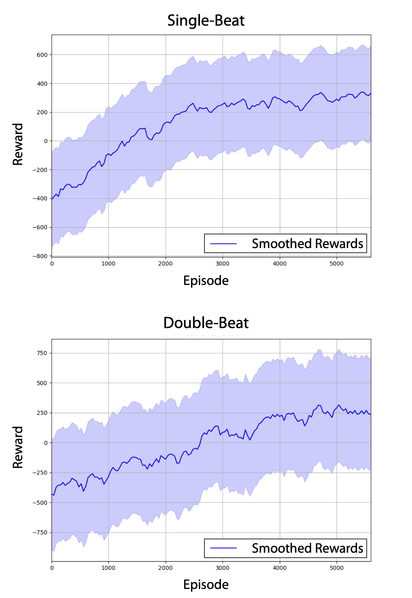
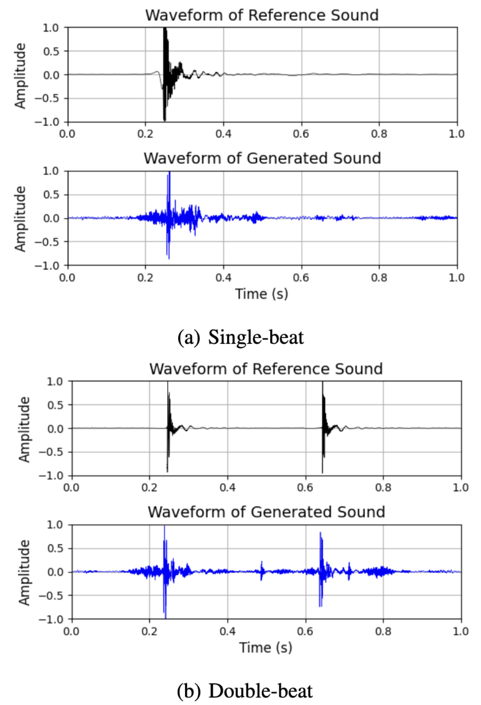
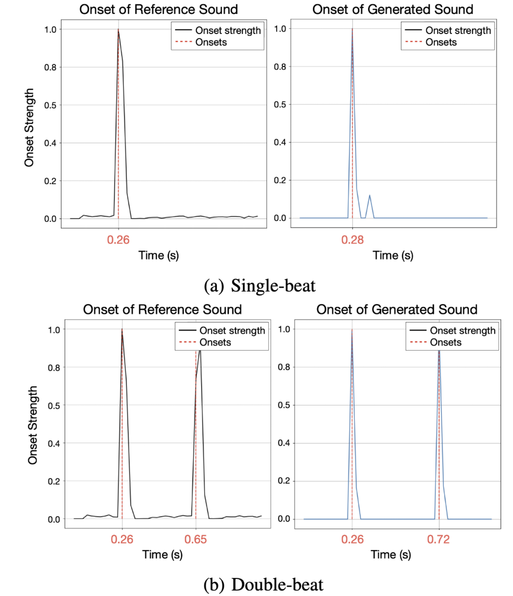

Experimental Results
Learning Curve
The learning curve of a prosthetic hand to make tapping sounds, single-beat and double-beats. The blue line is the smoothed reward, and the light blue area indicates the variance.
Waveform Comparison
The waveforms of the reference sound and the generated sound for both single beats (Top) and double beats (Bottom). While the generated sound exhibits some motor noise, the two waveforms are remarkably well aligned along the time axis.
Onset Strength and Timing
The onset strength and timing for both the reference sound and the generated sound in single beats (Top) and double beats (Bottom). The timing difference between the two beats in the generated sound closely aligns with the timing difference in the reference.
Tapping Motion Sequence

Snapshot of prosthetic hand movements for sound generation. (Top) The movement of the trained prosthetic hand when given a single beat sound of one-second duration. (Bottom) The movement of the trained prosthetic hand when given a double beat sound of one-second duration.